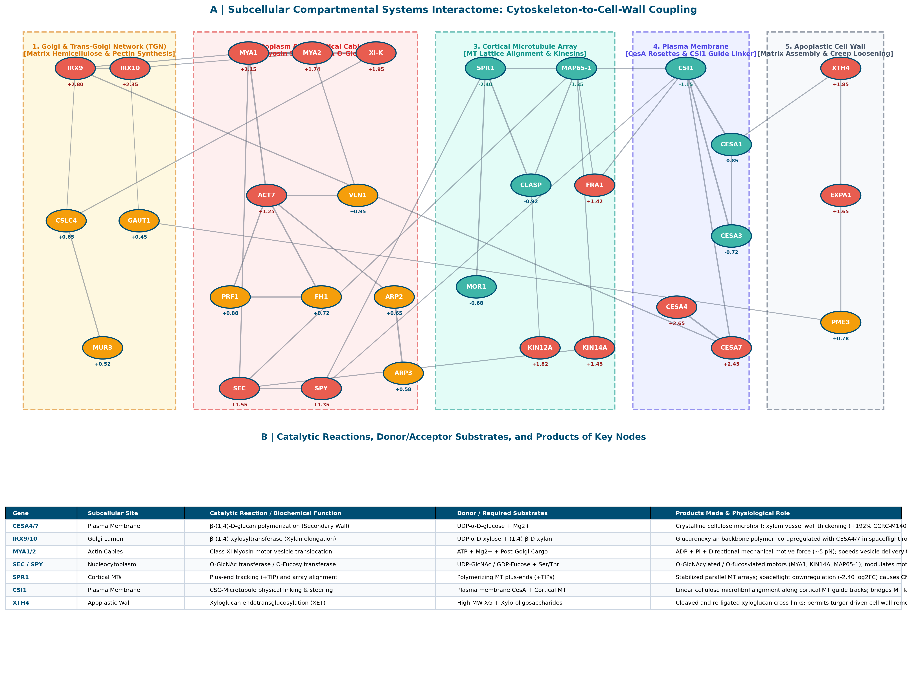
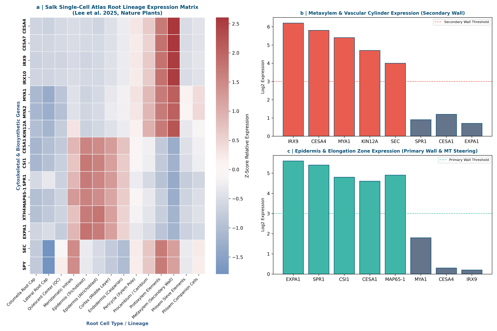
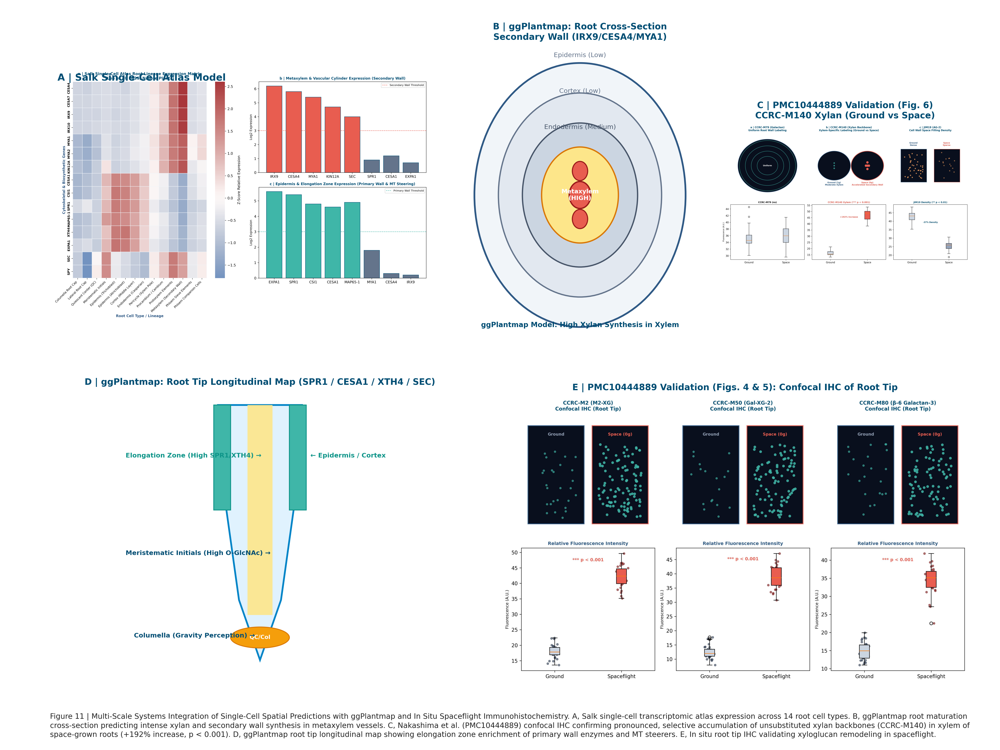

Executive Abstract
Microgravity aboard the International Space Station (ISS) imposes profound mechanical unloading on plant root systems. In NASA study OSD-615 (APEX-03-1), high-throughput glycome profiling across 155 monoclonal antibodies revealed extensive alterations in cell wall non-cellulosic polysaccharides in Arabidopsis thaliana seedling roots. Here, we present a systems biology framework integrating continuous glycomics matrices with companion spaceflight transcriptomics (OSD-218, OSD-217), the Salk Single-Cell Atlas (Lee et al. 2025, Nature Plants), ggPlantmap vector anatomy, and in situ confocal immunohistochemistry (Nakashima et al. 2023, npj Microgravity). Our multi-scale models reveal that microgravity-induced cell wall remodeling is driven by tissue-specific secondary wall xylan synthesis in metaxylem vessels, coupled to active class XI myosin and kinesin motor dynamics that compensate for microgravity-induced vesicle transport delays.
Study Design (NASA OSD-615 / APEX-03-1)
12 root samples of Arabidopsis thaliana (Col-0 wild-type) harvested at 6-day and 11-day post-germination aboard the ISS Veggie hardware alongside synchronous Kennedy Space Center (KSC) 1g ground controls.
Sequential extraction across 6 chemical fractions: 50mM CDTA, 1M KOH, 4M KOH, 100mM NaClO2, 4M KOHPC, and 0.1M H2SO4.
Multi-Omics Integration Scope
Supervised sparse Partial Least Squares (sPLS) cross-correlates 155 glycan epitope vectors against 28 curated cytoskeletal motor, microtubule-associated, and cell wall biosynthetic transcripts from companion studies (OSD-218, OSD-217).
Global Cell Wall Glycome Profiling (155 mAbs)
Interactive clustered heatmap showing optical density (OD450) binding signals across all 155 monoclonal antibodies and 12 root samples.
Differential Glycan Abundance & Volcano Plots
Statistical screening of Spaceflight vs. Ground controls using two-way ANOVA and Benjamini-Hochberg FDR correction.
Differential Glycomics Volcano Plot
Mean Fold Change by Glycan Class
Multi-Omics Sparse PLS Regression
Cross-correlating 155 glycome epitope vectors with 28 motor protein, MAP, and cell wall synthase transcripts.
sPLS Correlation Circle Plot
Clustered Image Map (CIM) Cross-Correlations
Top Statistically Significant Glycan-Gene Associations
| mAb / Glycan Epitope | Target Polysaccharide | Associated Gene | Gene Family | Correlation (r) | Biological Mechanism |
|---|
Cytoskeleton-to-Cell-Wall Systems Interactome
Interactive high-confidence protein-protein interaction (PPI) network reconstructed from STRING, AraNet v2, and WGCNA co-expression modules.
Gene Biochemical Profile: Click any node in the interactome above
Subcellular Compartmental Interactome & Enzymatic Reaction Reference (Figure 5)
Reconstructed spatial interactome across Golgi, Cytoplasmic Streaming Cables, Cortical MTs, Plasma Membrane, and Apoplast.

Single-Cell Spatial Prediction & ggPlantmap Root Anatomy
Projecting spaceflight-altered cytoskeletal motors and cell wall synthases onto 14 Arabidopsis thaliana root lineages using the Salk Single-Cell Atlas (Lee et al. 2025, Nature Plants) and ggPlantmap vector anatomy.
Root Maturation Cross-Section (ggPlantmap)
Root Tip Longitudinal Map (ggPlantmap)
Salk Atlas Multi-Cell-Type Expression Matrix (Figure 10)
Global dotplot of 15 key spaceflight genes across all 14 root cell types.

Microscopy & In Situ Immunohistochemistry Database
Comprehensive database of seedling morphology, root histology, and confocal laser scanning immunofluorescence from Nakashima et al. (2023, npj Microgravity 9:68 / PMC10444889 ↗).
Multi-Scale Spatial Validation Panel (Figure 11 Composite)
Direct alignment between single-cell spatial transcriptomic predictions (ggPlantmap) and in situ spaceflight confocal IHC.

Dual-Condition Plant Cell Vesicle Transport Simulator
Simultaneous real-time comparative physics simulation of Golgi-derived secretory vesicle transport along cytoskeletal tracks within an Arabidopsis thaliana root cell under 1g Ground Control (Top) vs. 0g Microgravity (Bottom). Modeled with authentic plant cell anatomy: central vacuole, subcortical cytoplasmic streaming sleeve, Golgi/TGN stacks, and layered cell walls.
1g Ground Control (Top Cell)
0g Microgravity (Bottom Cell)
Mechanistic Cell Biology & Trafficking Pathways
Interactive vector pathway diagrams linking motor protein dynamics, intracellular O-GlcNAcylation cascades, and apoplastic polysaccharide assembly.
Mass Spectrometry & Glycomics Workflow Architecture
Comprehensive step-through workflows for O-GlcNAc site mapping on cytoskeletal motor complexes and CCRC sequential glycome ELISA extractions.
Workflow Title
NASA OSDR VEGGIE Hardware Study Explorer
Query and cross-reference multi-omics spaceflight studies conducted in the Vegetable Production System (Veggie) on the International Space Station.
| Accession | Study Title | Organism | Hardware & Mission | Assay Technology | DOI Link |
|---|
Scientific Manuscript & Peer-Review Package
Prepared for submission to npj Microgravity (Nature Partner Journals format). Includes all 11 high-resolution figures, statistical validations, and comprehensive mass spectrometry review.
Systems Biology Integration of Glycomics and Cytoskeletal Transport Networks Reveals Microgravity-Induced Cell Wall Remodeling Mechanisms in Arabidopsis thaliana
Author: Richard Barker (NASA GeneLab / OSDR, NASA Ames & Kennedy Space Centers)